3 Marketing
3.1 Misc
- Notes from
- https://hbr.org/2021/07/why-you-arent-getting-more-from-your-marketing-ai?ab=seriesnav-spotlight
- https://hbr.org/2021/07/how-to-design-an-ai-marketing-strategy?utm_source=Data_Elixir&utm_medium=social
- Most marketing AI addresses segmentation, targeting, and budget allocation.
- Tools to engage customers: Salesforce, Marketo, Braze, Facebook Ads, or Google Ads
- Google and Facebook are perennially at the top of charts for highest return on ad spend
- www.singular.net may be useful resource to check from year to year
- Example: run a Facebook Ad campaign for these at-risk customers
- Manual: Create a SQL query, pull a list from the data warehouse, download it to CSV, and upload it into Facebook Ads or build an integration
- Automate:
- Reverse ETL
- I think this process is described in the “Manual” part (above)
- Platforms: Flywheel
- Reverse ETL
- Google and Facebook are perennially at the top of charts for highest return on ad spend
- Facebook enables smart mobile user acquisition for mobile brands with 2 methods:
- App Event Optimization (AEO)
- looks for new-to-you people who are similar to customers you already have in your apps at defined stages
- Value Optimization (VO)
- looks for people who will spend a certain amount of money in your mobile app
- App Event Optimization (AEO)
3.2 Terms
- Action-Based - clicks, impressions, and GRP data
- Adstock - an average decaying function for the carryover effect (see Channel Attribution section)
- Advanced Mobile Measurement (AMM) - Facebook’s tracker. Allowed advertisers to access click-through conversion data through their MMP
- Affiliate marketing - a type of performance-based marketing in which a business rewards one or more affiliates for each visitor or customer brought by the affiliate’s own marketing efforts.
- Carryover Effect - the lag between the time a consumer is touched by an ad and the time a consumer converts because of the ad
- Click-in - when a user click on something to reach your website/app
- Click-out - the last click a user makes that take them to another website/app
- Clearing Price - The final price paid for an impression.
- CPC - Cost Per Click - refers to the cost an advertiser pays each time an online user clicks on his or her digital ad
- CPM or Cost Per Thousand Impressions is the amount advertisers are willing to pay for every one thousand impressions they receive
- CPM = (campaign_budget * 1000) / #_of_desired_impressions
- eCPM or effective CPM is the predicted revenue earned by a publisher for every one thousand impressions; metric for ad testing
- eCPM = (estimated_earnings * 1000) / total_impressions
- factors that affect eCPM (for all, more is better)
- monthly website traffic
- # of ad networks
- find ad networks offering better deals for different geographical locations
- viewability score
- multiple links in this article
- Floor prices are traditionally used by publishers to increase the closing price of their auctions. Think these are implemented by publishers with second-price auctions when they feel reductions are too large.
- GRP - Gross Rating Point. A standard measure in advertising, it measures advertising impact. You calculate it as a
- One GRP is one percent of all potential adult television viewers (or in radio, listeners) in a market Calculatations:
- percent of the target market reached multiplied by the exposure frequency.
- GRPs (%) = 100 * Impressions (#) ÷ Defined population (#)
- GRPs (%) = 100 * Reach (%) × Average frequency (#)
- Examples
- if you get advertise to 30% of the target market and give them 4 exposures, you would have 120 GRP.
- If an average of 12% of the people view each episode of a television program, and an ad is placed on 5 episodes, then the campaign has 12 × 5 = 60 GRPs.
- If 50% view three episodes, that’s 150 GRPs
- One GRP is one percent of all potential adult television viewers (or in radio, listeners) in a market Calculatations:
- Header Bidding - Just the name for technical auctioning process behind bidding on ad space on a website.
- Used to be done by waterfall archetecture where ads would pass from one publisher’s website to another until it reached one with a price floor that was below the advertiser’s bidding price
- Ideal customer profile (ICP) - customers who bring in the most long-term value for a company
- Identifier for Advertisers (IDFA) - a random device identifier assigned by Apple to a user’s device. Advertisers use them to precisely target and track users within apps on iOS devices
- Impression - An instance of each time your ad is shown on a search result page or other site on the Google Network. (i.e. number of people your ad reaches)
- Each time your ad appears on Google or the Google Network, it’s counted as one impression.
- In some cases, only a section of your ad may be shown. For example, in Google Maps, we may show only your business name and location or only your business name and the first line of your ad text.
- You’ll sometimes see the abbreviation “Impr” in your account showing the number of impressions for your ad.
- Inventory - the amount of ad space (or the number of advertisements) that a publisher has available to sell. While the term originated from print, it has grown to encompass ad space on the web and on apps and mobile ads
- Price Floor - The minimum price a publisher will accept for its inventory — ignoring all bids below that price.
- Reduction - Money saved in a second-price auction; difference between the bid price and the clearing price
- RPM - similar to eCPM; it’s the amount earned by publishers per thousand pageviews
- Touchpoint - any time a potential customer or customer comes in contact with your brand–before, during, or after they purchase something from you. Interactions with marketing campaigns and the home page provide rich information about who they are and what they like
- Examples:
- Before Purchase: Social media, Ratings and reviews, Testimonials, Word of mouth, Community involvement, Advertising, Marketing/PR, visits your website
- During Purchase: Store or office, Website, Catalog, Promotions, Staff or sales team, Phone system, Point of sale
- Post Purchase: Billing, Transactional emails, Marketing emails, Service and support teams, Online help center, Follow ups, Thank you cards
- Examples:
- UTM - Urchin Traffic Monitor - used to identify marketing channels or results from ad campaigns
- Name comes from Urchin Tracker, a web analytics software that served as the base for Google Analytics.
- e.g. http://yourwebsite.com/your-post-title/?utm_source=google
- utm code = string after “?”
- separate each UTM parameter with the ‘&’ sign.
- This person clicked a google ad to get to your site
- utm code = string after “?”
- Google URL builder tool
- See article for me details, best practices, etc.
- Parameter types
- utm_source - traffic source (e.g. google, facebook, twitter, etc.)
- utm_medium - type of traffic source (e.g. CPC, email, social, referral, display, etc.)
- utm_campaign - campaign name, track the performance of a specific campaign
- utm___content - In case you have multiple links pointing to the same URL (such as an email with two CTA buttons), this code will help you track which link was clicked (e.g
utm_content=navlink) - utm_term - track which keyword term a website visitor came from. This parameter is specifically used for paid search ads. (e.g.
utm_term=growth+hacking+tactics)
3.3 Use Cases
Chatbots for lead development, customer support, and cross-selling or upselling
Inbound call analysis and routing, and customer comment and email analysis, classification, and response
Marketing campaign automation (including emails, landing page generation, and customer segmentation)
Channel Attribution
- Marketing mix modeling (MMM)
- Multi-touch Attribution Modeling (MTA)
- Unified Approach Online product merchandising
Pricing Product or service recommendations and highly personalized offers
Programmatic digital ad buying ( digital ads are served up almost instantaneously to users)
Sales lead scoring
Social-media planning, buying, and execution
Social-media sentiment analysis
Television ad placement (partial)
Web analytics narrative generation
Website operation and optimization (including testing)
Sales propensity models in customer relationship management (CRM) systems
Automated Tasks
- send a welcome email to each new customer
- chatbots on social media platforms
- start with a stand-alone non-customer-facing task-automation app, such as one that guides human service agents who engage with customers.
- less-capable bots can irritate customers. It may be better to have such bots assist human agents or advisers rather than interact with customers.
- start with a stand-alone non-customer-facing task-automation app, such as one that guides human service agents who engage with customers.
- Once companies acquire basic AI skills and an abundance of customer and market data, they can start moving from task automation to machine learning
Apps
- Stand-alone applications continue to have their place where integration is difficult or impossible, though there are limits to their benefits.
- Example
- Using IBM Watson’s natural language processing and Tone Analyzer capabilities (which detect emotions in text), the application delivers several personalized Behr paint-color recommendations that are based on the mood consumers desire for their space. Customers use the app to short-list two or three colors for the room they intend to paint.
Integrated ML/DL
- Netflix - recommendations are on a separate standalone app where the customer needs to request recommendations
- ML that coaches a customer service rep through a call
3.4 Metrics
- conversion rates, bounce rates, and average basket sizes
- Return on Ad Spend (ROAS)
- ROAS = Sales Revenue / Advertising Budget Spend
3.5 Conversion Lift Tests
- Also see
- Data Science >> Algorithms, Marketing
- Data Science >> Business Plots
- RCTs on a customer sample that tries to understand the impact of an ad campaign by randomly showing it to one group of users, with-holding it from another, and looking for a difference in behaviour between the two groups over some predetermined period of time.
- Example:
- A typical ecommerce brand might want to understand whether their Facebook ads are driving sales that wouldn’t have happened anyway, and so they’d want to track purchases as a KPI in their lift test.
- Example:
- Gold standard of incrementality measurement
- Incrementality Tests also help with re-engagement strategies to highlight the optimal day, post-install, to re-engage users and to ensure the highest incremental lift from your marketing efforts
- Alternatives
- A/B tests
- No way to measure incrementality
- The difference seems to be semantics IMO.
- With A/B, the control group gets a “different treatment” and with conversion lift tests, the control group gets no treatment
- Brand Lift Tests
- seek to measure a campaign’s impact on brand metrics, not conversions
- Geo-experiments (see below))
- Capable of measuring incrementality. Viable alternative to lift tests
- A/B tests
- How do you not serve ads to an audience (i.e the control group), yet still “own” the ad real-estate?
- Methodologies:
- Intent-to-treat (ITT) – this method calculates the experiment results based on the initial treatment assignment and not on the treatment that was eventually received (meaning you mark each user for test/control in advance and do not rely on attribution data. You have the “intent” to treat them with ads / prevent them from seeing ads, but there’s no guarantee it will happen).
- Ghost ads/bids – this is another example of a randomly split audience, but this time it is done just before the ad is served. The ad is then withheld from the control group, simulating the process of showing the ad to the user, known as ad serving, without paying for placebo ads. This is a tactic mostly used by advertising networks carrying out their own incrementality tests.
- Public service announcements (PSAs) – these are in place to show ads to both the test and control group however, the control group is shown a general PSA while the test group is shown the variant. The behaviors of users in both groups are then compared to calculate incremental lift.
- Methodologies:
- Cost per Incremental Conversion (CPiP)
- Metric used to determine whether the treatment’s effect (e.g incremental conversion) is enough to warrant implementing the treatment in production
- Higher is worse
- Example:
- ecommerce brand spent $100k on their campaign.
- They measured
- 7,500 sales from their campaign’s treatment group (both during and for some fixed time after the campaign)
- 5,000 sales from their campaign’s control group
- 7500 - 5000 = incremental sales
- CPiP = $100,000 / (7500 - 5000) = $40
- If the CPiP < Customer Lifetime Value (CTV)(see Algorithms, Business) and this margin is acceptable at which to acquire customers, then the treatment (e.g. ad campaign) can move to production
- Metric used to determine whether the treatment’s effect (e.g incremental conversion) is enough to warrant implementing the treatment in production
- Incremental Return on Advertising Spend (iROAS) = (Treatment Group Revenue - Control Group Revenue) / Treatment Spend
- less than 100% you can redistribute budgets to better-performing campaigns and channels
- equal to or higher than 100% you know you are not cannibalizing organic traffic and that your ads are effective
3.6 Geo-experiments
- A quasi-experimental methodology where non-overlapping geographic regions (geos) are randomly assigned to a control or treatment group
- Example: ads are served only in the geos of the treatment group while users in geos of the control group won’t be exposed to the advert
- All the major ad networks/tracking platforms allow for targeting ads to the relevant level of location (neighbourhood, city, state, etc.)
- Conversions are measured at a geo-level.
- Steps
- Decide geo-level based on market geography
- country –> states
- state –> zip codes, Designated Market Area (DMA)
- Don’t select geos that are too small as people may travel across geo-boundaries and the volumes of conversions may be too low
- Perform a preliminary analysis of the geos
- Determine factors that differ between geos that may influence the experiment
- Find geos most similar to each other so the experiment isn’t biased even after randomization
- Assignment
- Randomly assign treatment and contol to geos
- Analysis
- Use difference in differences or synthetic controls to measure incremental conversions
- Example DiD
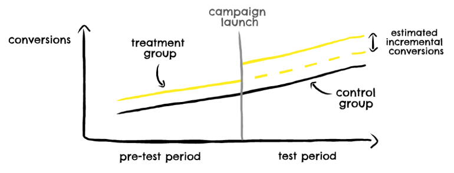
- Decide geo-level based on market geography
3.7 Channel Attribution
- Misc
- Also see UTM parameters in Terms on how to use URLs to track different ad accounts.
- When you start tracking the UTM parameters and tying it to the account creation, you can now measure the conversion rate from ad click to purchase.
- The main KPI is now end-to-end customer acquisition cost, rather than cost per click.
- Model should reflect these characteristics
- The concave shape of diminishing returns
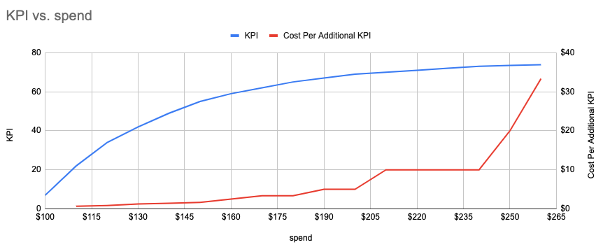- As the market becomes saturated by your ads, additional ad spend generates less return
- sales ~ ln(spend) and you’d have make sure you change the 0s to a really small number or add 1 , e.g y = ln(x+1).
- By adding 1, zeroes will be zeros on the log-scale since log 1 = 0
- Carryover Effect
- the lag between the time a consumer is touched by an ad and the time a consumer converts because of the ad.
- Adstock is a decaying function that describes the average carryover effect
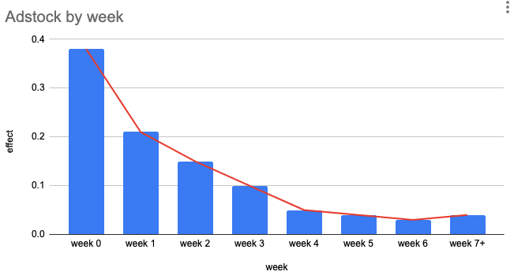- The advertising effect of this example channel was about 40% in the initial week, then decrease to 20% in the following week, and so on
- Not sure how this “effect” is measured. Maybe it means a 40% increase in conversions during the initial week of the ad buy. Maybe this is measured experimentally. Maybe it’s something like a ratio of conversions after clicks on digital ads/paid search to total clicks on the ad.
- Calculate a “spend_with_adstock” variable
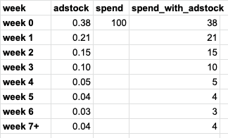- decay rate is specific to an ad channel and business type
- online ads have a more immedicate effect since users are usually ready to buy
- offline ads have a longer delay since it takes time to respond
- decay rate is specific to an ad channel and business type
- The advertising effect of this example channel was about 40% in the initial week, then decrease to 20% in the following week, and so on
- The concave shape of diminishing returns
- Typically dealing with sparse data
- There can be a big spike in spending due to a new launch but no consistent spending afterward.
- For certain channels, the budget could be turned off for some time and back on due to market dynamics or business strategy changes.
- In some cases, we can pool together smaller locations that are believed to behave similarly to each other and estimate them using a hierarchical Bayesian model (the same logic can be applied to similar channels)
- Issues
- Self-selection/endogeneity
- Example: paid search
- a user already has the brand she wants to purchase in mind and searches the brand name online. Then she clicked the paid search ad and made a purchase. This would incur ad spend, however, the purchase would not be incremental sequence of steps (i.e customer journey) because she would have purchased anyway. So the ad didn’t induce the purchase since the user was already ready to purchase before encountering the ad.
- Upper funnel channels can get less credit than downstream channels
- e.g. a user saw an ad on TV first and wanted to make a purchase online. He then searched for the product on Google and bought it from the paid search ad. The model could attribute more credit to the search if not treated well.
- Solutions
- Informative priors from reliable experimentation on channels with high selection bias to guide the model and prevent the model from being biased towards endogenous channels.
- Instrumental variables to better control for the bias (although instrumental variables may be hard to find or construct)
- Selection Bias Correction approach developed by Google (Paper).
- Google team used DAGs of the search ad environment and derived a statistically principled method for bias correction
- Adjusted for search queries to close backdoor paths.
- After the adjustment, the coefficient for the search channel is much less than that from the naive model and is aligned with the result from the experimentations.
- Example: paid search
- Multi-Collinearity
- e.g. two channels might be launched together to reinforce each other or to support a product launch
- Solutions: variable reduction techniques: PCA, ElasticNet, etc.
- Self-selection/endogeneity
- Also see UTM parameters in Terms on how to use URLs to track different ad accounts.
- Unified Approach
- Use experimentation results as priors for MMM and use MTA results to validate and calibrate MMM
- Experiment examples: Conversion Lift Tests, Geo-Experiments, A/B Tests, RCTS, etc.
- Use trustworthy priors obtained from experiments or external sources to inform a bayesian model
- A bayesian model with time-varying coefficients can handle violatility of marketing effects (particularly for new companies)
- Use experimentation results as priors for MMM and use MTA results to validate and calibrate MMM
- Marketing mix modeling (MMM)
- Sales (or ) ~ Channel_Spend (+ Trend + Seasonality(s) + Campaigns + Events + Holidays + Weather +… etc.)
- Other outcome variables
- KPI or google search volume or website visits or account sign-ups
- Other explanatory variables:
- media cost for each channel
- product pricing
- economic indicators
- synergistic effect between different media (i.e. interaction)
- competitor activities
- Other outcome variables
- Better for measuring performance of offline traditional Out-of-Home (OOH) media like TV, radio and print which is unlike online advertising where we have access to metrics like clicks, clickthrough rate, impressions, etc.
- Requires relatively large budgets and longer data history to have reliable reads. Sparse data and short data history could make the results biased and unstable
- Typically requires at least 2 years of weekly data (longer is better) and a good volume of media spend.
- For small data situations, reduce the number of features by combining smaller channels and prioritizing bigger channels
- Tends to underestimate upper funnel channels and overestimate lower funnel channels.
- Less likely to get more granular level insights, and will not show the nuances of the user journey
- Sales (or ) ~ Channel_Spend (+ Trend + Seasonality(s) + Campaigns + Events + Holidays + Weather +… etc.)
- Multi-touch Attribution Modeling (MTA)
- Also see
- Multi-touch attribution: The fundamental to optimizing customer acquisition (only skimmed, haven’t taken notes yet)
- Unlike MMM, it acknowledges that the customer journey is complex and customers may encounter more than one (or even all) of our marketing channel activities in their journey
- Requires metrics like clicks, clickthrough rates, impressions, etc.
- Therefore, only suited for digital media
- MTA data aims to model the entire user ad journey. However, in reality, the real-world data can be partial and only includes part of the touch points due to tracking difficulty.
- ** MTA is also subjective to user data privacy initiatives, such as Apple no IDFA and Facebook no AMM. In the foreseeable future, Google will also join the force. Without user-level tracking data, MTA models cannot be built. **
- Most MTA methods utilize click data, not impressions, which tends to give more credit to more clicky channels, like search. This can also make the analysis biased.
- Weighting is assigned to these channels based on their touchpoints to determine each channel’s contribution / involvement towards the sale
- Weighting methods:
- Last click attribution and First click attribution
- assigns 100% weighting to the last/first channel that was clicked on
- Naive default model used on many analytics platforms
- Google switched from this model to “data driven attribution” (see below) in Google Analytics 4 (GA4)
- Time Decay - weighting is distributed based on the recency of each channel prior to conversion. The most weighting will be given to the last channel prior to conversion (PPC). The least weighting is assigned to the first channel.
- Position-based - the first and last channels each receive 40% of the weighting, with the remainder 20% distributed equally to the middle channels.
- See https://support.google.com/analytics/answer/10596866?hl=en#zippy=%2Cin-this-article for explanations of other rules based models in GA4
- Data-driven attribution (DDA) - weighting is assigned objectively by an algorithm based on the probability of conversion, given the touchpoints. Methods like
- Google Search Ads 360 - Markov Chain, game-theory approaches using Shapley values
- GA4
- Analyze the available path data to develop conversion rate models for each of your conversion events
- Use the conversion rate model predictions as input to an algorithm that attributes conversion credit to ad interactions
- Last click attribution and First click attribution
- Weighting methods:
- Also see
- Mobile Channel Attribution
- Advertising Identifiers - helps mobile marketers attribute ad spend.
- Google’s advertising identifier (GAID)
- Example:
- When a company like Lyft or Kabam runs user acquisition campaigns to gain new mobile customers, a mobile measurement partner like Adjust, Singular, Kochava, or AppsFlyer can help them connect a click on an ad with an eventual app install on a specific device. That helps Lyft know that an ad worked, and that whatever ad network they used for it succeeded.
- if the person who installed that app eventually signs up for an account and takes a ride share, Lyft knows where and how to attribute the results of that marketing effort, and connect it to the ad spend that initiated it. Even better, from Lyft’s perspective, it can use the IDFA to tell mobile ad networks essentially: I like users like this; go find me more.
- Apple’s SKAdNetwork[](./_resources/Marketing.resources/https-3A-2F-2Fspecials-images.jpg%3Ffit%3Dscale]]
- privacy-safe framework for mobile attribution
- allows advertisers to know which ads resulted in desired actions without revealing which specific devices — or which specific people — took those desired actions.
- You go to an ad network like Vungle or AdColony or Chartboost — or Facebook or Google, for that matter — and kick off an ad campaign. They show your ads to potential new mobile customers, and when one clicks on it and downloads your app from the App Store, Apple itself will handle sending a cryptographically signed notification — a postback — to the ad network. That postback will not include any user or device-specific information, so while it will validate the conversion for marketing purposes, it won’t reveal any personal information of your new app user.
- Can’t be used in Conversion Lift Tests
- postbacks require a ad campaign ID for the conversion to be attributed to, so it’s not possible to measure the conversion volume from a lift test’s control group (since the control group isn’t exposed to the ad)
- Advertising Identifiers - helps mobile marketers attribute ad spend.
3.8 Search Engine Marketing (SEM)
marketing on search engines where you pay to place ads at the top so that the user sees your ads before the organic search results (e.g. Google, Bing, etc.)
Most SEM ads work on an auction system, where you have to place a bid on each of the search terms (can be millions of terms) relevant to your business and if you win a position in the auction(there are usually 2–3 SEM ads per search, or more based on your region and the search engine you are using), then you would pay the cost equal to your bid or lower depending on which auction system the search engine follows.
Auctions
- Types
- First price auction: A model wherein the buyer pays exactly the price they’ve bid on any given advertising impression. (greater transparency)
- Second-price auctions: A model wherein the buyer pays $0.01 more than the second highest bid for an ad impression.
- Example (3 bidders)
Bids
Bidder A $2.20
Bidder B $2.80
Bidder C $2.50 first-price auction: B wins
clearing price will be the same as the bid- $2.80
second price auction: B wins
clearing price = $0.01 + second-highest bid ($2.50) = $2.51
reduction = $2.80 (winning bid) - $2.51 (clearing price) = $0.29
- bid shading technique buyers use in first-price auctions in an attempt to avoid overpaying
- takes a maximum possible bid and tries to forecast the market value for a given impression, in order to determine the actual bid price to submit.
outcome: bid price; model features: site, ad size, exchange and competitive dynamics
if win rates decrease, the algorithm raises the price they pay
- Some publishers (google, bing, etc.) use intelligent price floors to counteract bid shading
- Types
Optimize bidding for value vs traffic volume characteristics of key words
- sparsity issues (i.e. zero-inflation)
- Due to the long tail nature of the search terms (some search terms are more popular than some other obscure ones)
- Due to the conversion ratio itself — not every click from these SEM ads converts to a purchase
- What should the outcome variable be? (binary: conversion/no_conversion or numeric: bid value)
- Other considerations
- How does the effect of a competitor’s bid change based on the type of auctioning method?
- Seasonality?
- Pre-corona vs post-corona?
- Is there an optimal level of investment?
- sparsity issues (i.e. zero-inflation)
3.9 Customer Segmentation
- Also see
- Customer Journey (below)
- Algorithms, Product >> Customer Journey
- Seeks to answer:
- Who are the most valuable customers?
- Where do they come from?
- What do they look like?
- What and how do they like to buy?
- The company can achieve a higher return on ad spend with a smaller marketing budget, yielding a higher profit margin and more room for market expansion.
- Increases marketing efficiency by helping to indicate which campaigns are more likely to succeed with certain groups of customers
- Form marketing hypotheses based on cluster characteristics and test these hypotheses by varying campaigns based on the customer’s cluster membership.
- recommend a product they’re likely to purchase, a multi-buy discount, or on-boarding them on a loyalty scheme (e.g. rewards program)
- Once you know who your customers are and what their value is to your business, you can:
- Personalize your products and services to better suit your customers’ needs
- Create Communication Strategies tailored to each segment
- Focus Customer Acquisition to more profitable customers with messages and offers more likely to resonate with them
- Apply Price Optimization to match customer individual price sensitivity
- Increase Customer Retention by offering discounts to customers that haven’t purchased in a long time
- Enhance Customer Engagement by informing them about new products that are more relevant to them
- Improve your chance to Cross-sell and Up-sell other products and services by reaching out for the right segment when they’re more likely to respond
- Test which type of incentive a certain segment is more likely to respond to (e.g. pricing discounts, loyalty programs, product recommendation, etc.)
- Form marketing hypotheses based on cluster characteristics and test these hypotheses by varying campaigns based on the customer’s cluster membership.
- RFM Analysis (Recency, Frequency, and Monetary Value)
- Just need a transactional database with client’s orders over time (at least 2.5 to 3 yrs of data to capture enough behavior variation).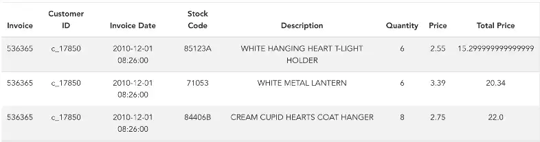
- time frame could be monthly or yearly or any other time frame required by the business
- Explicitly creates sub-groups based on how much each customer is contributing.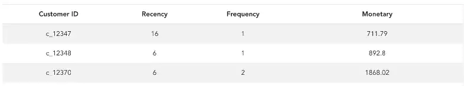
- Recency – How recently did the customer purchase?
- Invoice date can be used to calculate the recency
- number of days since the last purchase
- Frequency – How often do they purchase?
- Invoice numbers can be used to calculate the frequency
- number of invoices per month
- Monetary Value – How much do they spend?
- Total price can be used to calculate the monetary value.
- total monetary value of all purchases in a month
- Recency – How recently did the customer purchase?
- Modelling
- Also see
- Algorithms, Marketing >> Customer Lifetime Value >> BG/NBD Gamma-Gamma model
- Video: Bizsci
- lab-49-feature-engineering-customer-segmentation
- lab-58-customer-lifetime-value-rfm-calc
- python customer lifetime value, rfm + xgboost (youtube)
- Clustering (k-means is popular)
- Cluster Customer IDs based on Recency, Frequency, and Monetary Value variables
- Add additional variables if relevant to helping you choose a market strategy
- If you end up with too many variables for the amount of data you have, then perform PCA before clustering
- Cluster Customer IDs based on Recency, Frequency, and Monetary Value variables
- Also see
- Interpret clusters and create strategy for each cluster
- Example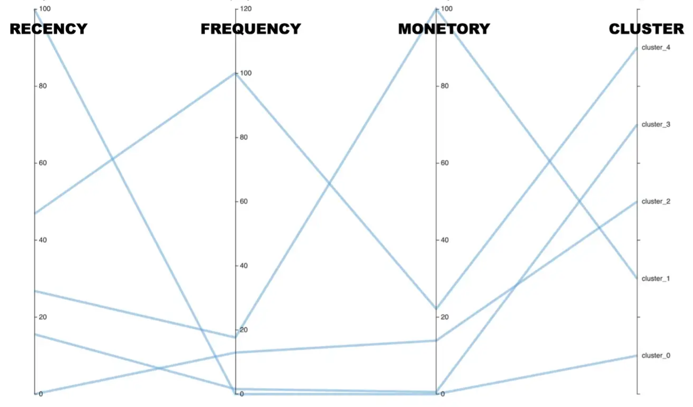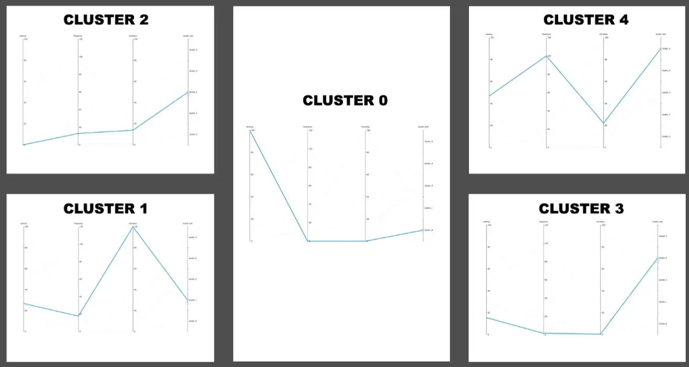
- Charts
- Both charts have the same info, right shows the patterns better but you can’t read the values
- RFM variables were standardized between 0 and 100 before clustering
- Cluster 0
- Interpretation — Customers who have not made purchases recently
- Strategy — Make offers to bring them back to purchasing Cluster 1
- Interpretation — Customers who have a high monitory value
- Strategy — Create a loyalty program so that they can continue spending more Cluster 2
- Interpretation — Customers who have not made purchases recently
- Strategy — Make offers to bring them back to purchasing Cluster 3
- Interpretation — Customers who are likely to churn
- Strategy — Retain them with exciting offers Cluster 4
- Interpretation — Regular customers
- Strategy — Create a loyalty program to keep them purchasing on a regular basis
- Charts
- Example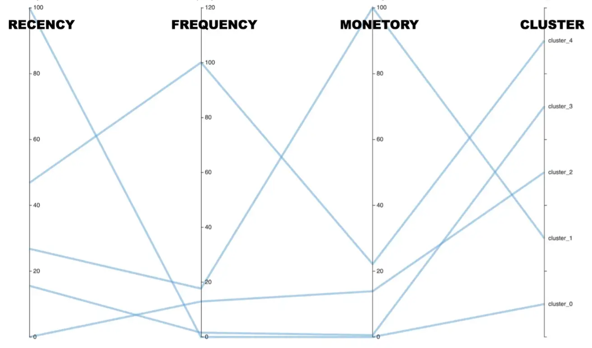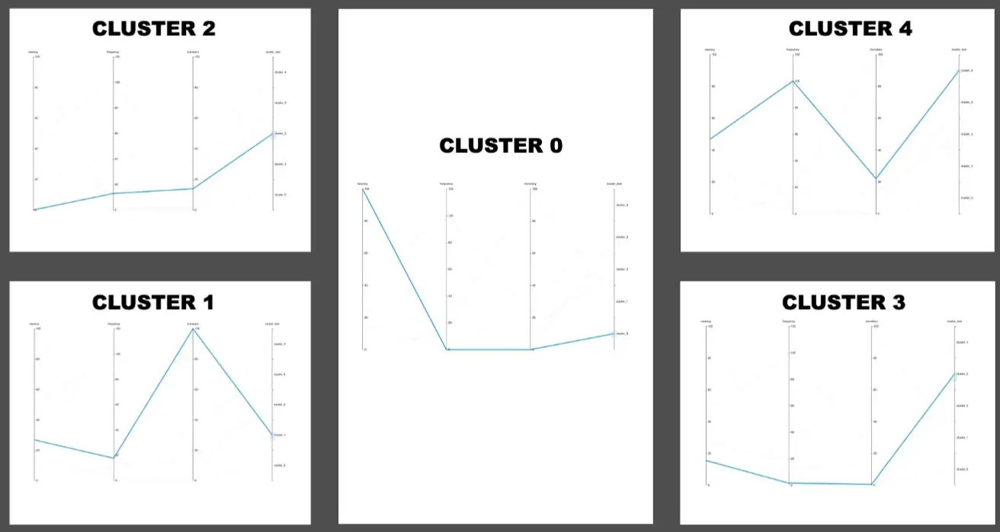
- Just need a transactional database with client’s orders over time (at least 2.5 to 3 yrs of data to capture enough behavior variation).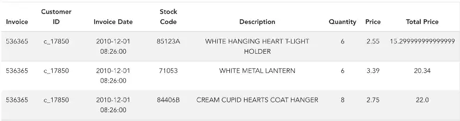
- Behavioral Segmentation
- Tries to understand how customers interact with your product or website
- Misc
- Also see
- Customer Journey
- Product Development >> Behavioral Data
- Also see
- Data
- Demographics: location, age, gender, and income
- Touchpoints (see Terms): view-through, click-through, the time between each action, etc
- If a user sees an ad on Instagram and quickly swipes over it, that probably indicates they are not very interested in it.
- Often impacted by advertisers’ programmatic push notifications
- Company Website Navigation: visiting behaviors provide enlightening ideas about what a visitor is truly looking for and how they like to shop (See Customer Journey)
- Purchasing: what a user buys, their purchasing frequency and timing, purchasing price and discounts, etc.
- Social media network: Is there an influencer within a customer’s network? (see bkmks >> Network Analysis)
- Example: Telecommunications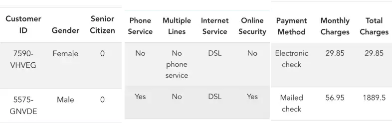
- Cluster the data and interpret the clusters
Example using the telecommunications data above The green cluster (aka segment) is Digitally engaged customers. A market strategy could be to create a digital loyalty card and reward them based on the use of digital services. This will in turn also increase revenue for the company.
The blue cluster is moderately engaged with low tenure. A market strategy could be to offer discounts and convert them into long-term contracts. The red cluster is basic customers with only phone service. A market strategy could be to educate them about the advantages of digital services and then upsell digital products.
3.10 Customer Journey
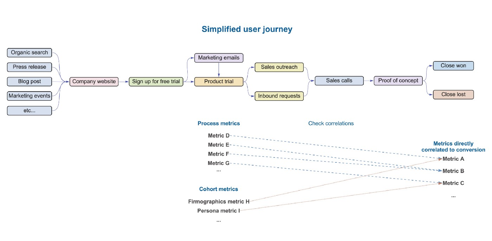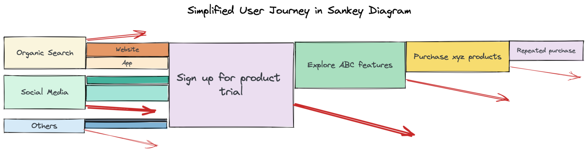
- Top Figure: Typical SaaS User Journey
- Bottom Figure: General User Journey
- Area of the rectangle represents the amount of customers that haven’t dropped off and remain the funnel
- The red arrow represents customers that drop off and don’t convert
- The start of the arrow show the section of the rectangle that represents the amount customer that drop off from on point to the next.
- Misc
- Also see Algorithms, Product >> Customer Journey
- Pre Sale
- When potential customers are in the “consideration” phase and researching a product, AI will target ads at them and can help guide their search
- determine which customers are most likely to be persuadable and, on the basis of their browsing histories, choose products to show them
- Use extremely detailed data on individuals, including real-time geolocation data, to create highly personalized product or service offers
- When potential customers are in the “consideration” phase and researching a product, AI will target ads at them and can help guide their search
- During Sale
- upselling and cross-selling and can reduce the likelihood that customers will abandon their digital shopping carts
- after a customer fills a cart, AI bots can provide a motivating testimonial to help close the sale—such as “Great purchase! James from Vermont bought the same mattress.”
- upselling and cross-selling and can reduce the likelihood that customers will abandon their digital shopping carts
- Post sale
- AI-enabled service agents (chatbots) triage customers’ requests—and are able to deal with fluctuating volumes of service requests better than human agents are
- can handle simple queries about, say, delivery time or scheduling an appointment and can escalate more-complex issues to a human agent
3.11 Workflow
- Find the Ideal Customer Profile (ICP) and target them (article) 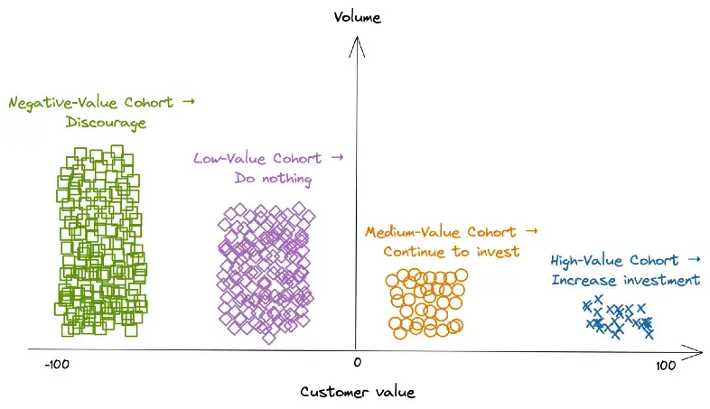
- Customer’s long-term value = Revenue from the customer’s repeated purchase — customer’s acquisition cost
- Segment in Negative, Low-Value, Medium-Value, and High Value cohorts
- See Customer Segmentation >> RFM Analysis
- Alternatively, based on its sales and marketing attribution systems, the brand can calculate one-year revenue and acquisition costs for each customer (or visitor that doesn’t convert). With that, the brand quickly gets each customer’s value and decides who is worth its marketing budget.
- The split between medium-value segment and high-value segment typically follows the 80/20 rule
- The High-Value segment can be further segmented into three smaller cohorts using pca or clustering algorithms.
- See Customer Segmentation >> Behaviorial Segmentation
- The customer data used to cluster can include: interactions with marketing campaigns, browsing history, purchase history, records of using coupons, etc.
- Domain knowledge is usually required to meaningfully label these cohorts and develop marketing plans based on the cluster attributes
- Examples
- Cohort 1 likes to buy the latest model, cohort 2 prefers to buy with discounts, and cohort 3 often makes purchases as gifts
- Cohort 1 reacts positively to campaigns about cool geeky features. On the other hand, cohort 2 engages more with campaigns spotlighting the practical benefits of using a new gadget.
- Cohort 1 trusts YouTubers who talk about the latest and greatest tech products and make purchases after watching unboxing videos. Cohort 2 likes to shop at Costco and buy gadgets at a discount
- Partnering with tech influencers helps the company attract cohort 1 while working with wholesale stores speeds up selling to cohort 2.
- Use experimentation on High-Value cohorts to test which acquisition/marketing campaigns have high ROAS. 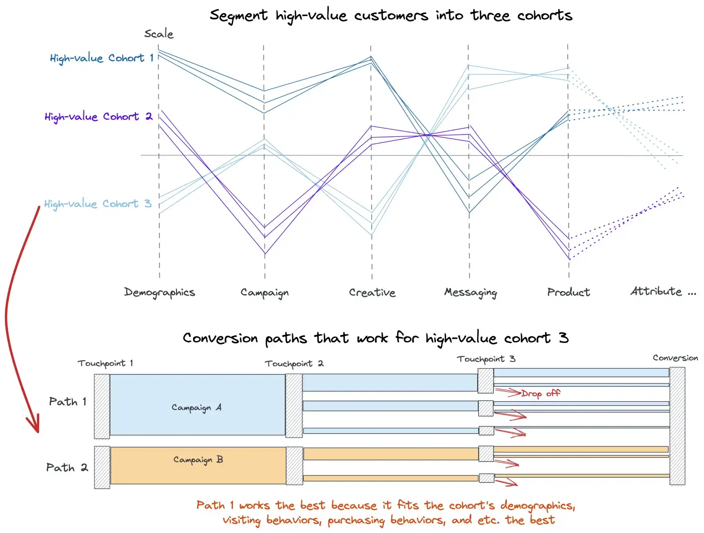
- For cohort 3, campaign A seems to have more success than campaign B
- Future campaigns can now target high value cohorts with greater conversion and less expenditure.
- Potential Pitfalls
- Make sure the metric fits the business question.
- Example: Churn
- Also see Algorithms, Marketing >> Churn
- Don’t model who was most likely to leave, they should have asked who could best be persuaded to stay—in other words, which customers considering jumping ship would be most likely to respond to a promotion.
- i.e. swing customers - like politicians looking for swing voters because they are persuadable.
- If you model the wrong objective, you can squander money on swaths of customers who were going to defect anyway and underinvest in customers they should have doubled down on.
- Think this has to be 2 stages
- Filter data before promotions over some window –> model traditional churn –> filter data after promotion –> label which likely churns left and which ones didn’t –> model churn with new churn labels using data after promotion because you want probability of churn given promotion
- So you’d have 2 models: 1 to identify churners and 1 to identify swing customers from churners
- Does a lift model help here?
- Think this has to be 2 stages
- Example: Increasing user spend for a video game
- Finding features that increase time spent playing doesn’t efficiently raise revenue or maybe not at all if most of your players play for free.
- e.g. Increasing my time spent playing FOE doesn’t increase FOE’s revenue since I don’t pay for shit on that game.
- Guessing there’s a decent correlation between weekly total_time_spent_playing and overall revenue and they thought they could increase revenue by increasing total time_spent_playing. They should have been looking at correlations between features and spend_per_customer.
- Maybe just filter top spenders and see which features they prefer (i.e. correlated to)
- Finding features that increase time spent playing doesn’t efficiently raise revenue or maybe not at all if most of your players play for free.
- Example: Churn
- Make sure when you increase the accuracy of a model, it doesn’t hurt the bottom line due to a bad tradeoff
- Consider the consumer goods company whose data scientists proudly announced that they’d increased the accuracy of a new sales-volume forecasting system, reducing the error rate from 25% to 17%. Unfortunately, in improving the system’s overall accuracy, they increased its precision with low-margin products while reducing its accuracy with high-margin products. Because the cost of underestimating demand for the high-margin offerings substantially outweighed the value of correctly forecasting demand for the low-margin ones, profits fell when the company implemented the new, “more accurate” system.
- Determine the optimal granularity of predictions
- Consider a marketing team deciding how to allocate its ad dollars on keyword searches on Google and Amazon. The data science team’s current AI can predict the lifetime value of customers acquired through those channels. However, the marketers might get a higher return on ad dollars by using more-granular predictions about customer lifetime value per keyword per channel.
- Make sure the metric fits the business question.
- Refine the Business Question
- When defining the problem, managers should get down to what we call the atomic level—the most granular level at which it’s possible to make a decision or undertake an intervention.
- A good business question captures the full impact of the decision on the Profit and Loss (P&L), recognizes any trade-offs, and spells out what a meaningful improvement might look like.
- Gradation from an extremely vague question to a more finely grained question
- “How do we reduce churn?”
- “How can we best allocate our budget for retention promotions to reduce churn?”
- Has the retention budget been set, or is that something we need to decide?
- What do we mean by “allocate”?
- Are we allocating across different retention campaigns?
- “Given a budget of $x million, which customers should we target with a retention campaign?”
- Define Missed Opportunity metrics
- Identify sources of waste and missed opportunities
- waste example: targeting a likely-to-churn customer with a promotion that is not persuadable
- missed opportunity example: not targeting a likely-to-churn customer with a promotion that is persuadable
- Compare the distribution of success versus failure to quantify waste and missed opportunities.
- Measure
- For difficult to quantify situations use aggregate data
- Example of an approach for churn model example using aggregated data
- customers who received promotion: what’s the cost of the promotion incentive relative to the incremental lifetime value
- difference or ratio?
- customers who didn’t receive promotion: what’s the lost profit associated with the nonrenewal of their contracts
- customers who received promotion: what’s the cost of the promotion incentive relative to the incremental lifetime value
- Example of an approach for churn model example using aggregated data
- For difficult to quantify situations use aggregate data
- Identify sources of waste and missed opportunities
- Determine the cause of waste and missed opportunities
- In an ideal world, what knowledge would you have that would fully eliminate waste and missed opportunities? Is your current prediction a good proxy for that?
- In churn example, rather than the basic churn/no churn model, focusing on persuadability would have led to great improvements.
- Does the output of your AI fully align with the business objective?
- Churn example: A persuadable user with low expected profitability should have a lower priority than a persuadable user with high expected profitability.
- additional factor that further optimizes the solution to the refined business question
- Churn example: A persuadable user with low expected profitability should have a lower priority than a persuadable user with high expected profitability.
- How much are we deviating from the business results we want, given that the AI’s output isn’t completely accurate?
- Quantifying the errors of your model
- Churn example: the cost of sending a retention promotion to a nonpersuadable customer (waste) is lower than the cost of losing a high-value customer who could have been persuaded by the offer (missed opportunity). Therefore, the company will be more profitable if its AI system focuses on not missing persuadable customers, even if that increases the risk of falsely identifying some customers as being receptive to the retention offer.
- In an ideal world, what knowledge would you have that would fully eliminate waste and missed opportunities? Is your current prediction a good proxy for that?